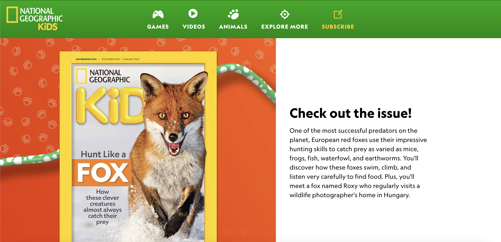
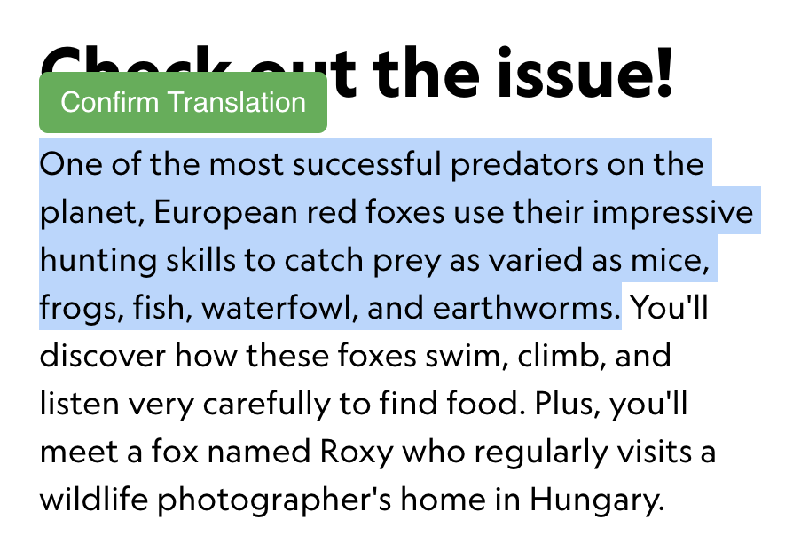
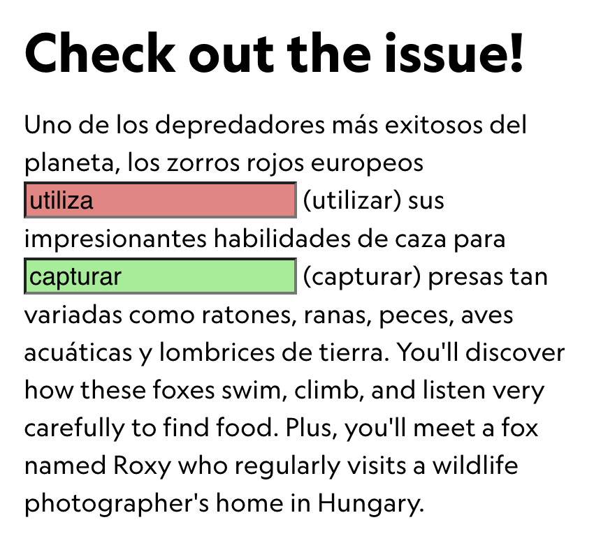

Step 1: Click on the extension
Select the logo in the top right corner of your window to activate (and deactivate) the extension.
Here’s how you can make the most out of your new tool!
Select the logo in the top right corner of your window to activate (and deactivate) the extension.
Select any text on a webpage to begin. Make sure you’re on a text-heavy website for the best results.
After highlighting, click the "Confirm Translation" button that appears near your selection. If you do not like your selection, you can click out.
Once the translation appears, fill in the blanks for missing verbs and click enter to determine accuracy. Interact with the underlined words for more information and continue surfing for more questions!
